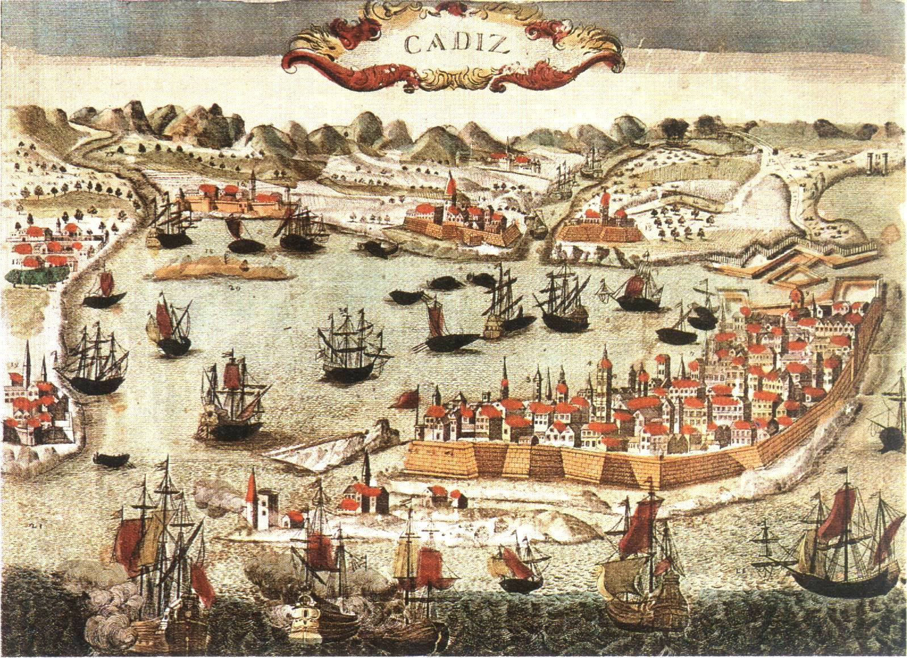

La història de cadis és la pròpia d’una ciutat marcada per la seva estratègica situació militar i comercial que distingeix amb diverses fases o successos en la història com els següents:
Època púnica o cartaginesa: Els estruscos i cartaginesos es van aliar contra els grecs, Cartago es converteix en propietària del mediterrani occidental, donant a la nova ciutat Gadir convertir-se a la base d’un nou monopoli comercial.
Amb la conquesta romana, la ciutat passa a cridar-se Gades, la seva conquesta va ser molt beneficiada per al seu comerç i exercit, aquesta nova ciutat representa l’auge màxim de la Cadis romana però que seguia sent la ciutat dels gaditans, experts navegants i constructors de vaixells.
Edat Mitjana: Durant la crisi del segle III, la ciutat entra en declivi important, per la caiguda de l’imperi romà, Perdent la capital de província i la seva importància comercial i estratègica. Presència Bizantina: La ciutat passo per vàndals, bizantins i visigots, fins a l’any 620.
Qadis: Després de la conquesta musulmana, la ciutat canvia de Gades a Qadis el 19 de juny de l’any 711.
Edat moderna: -Creixement de la ciutat: De Cadis va partir Cristòfol Còlon a les índies, l’any 1500 van fundar, Nova Cadis, la primera ciutat espanyola en el continent americà. Nova Cadis: la primera ciutat espanyola en el continent americà. Terratrèmol: L’1 de novembre de 1755 es va produir un sisme submarí. ,
Edat contemporània: En 1811 la junta suprema va convocar als diputats de tots els territoris de la monarquia per redactar la constitució d’Espanya.
La glorosia: En 1868 es va produir l’aixecament de Juan Bautista Topete iniciant la revolució liberal que desembocaria en la constitució democràtic liberal de 1869.
